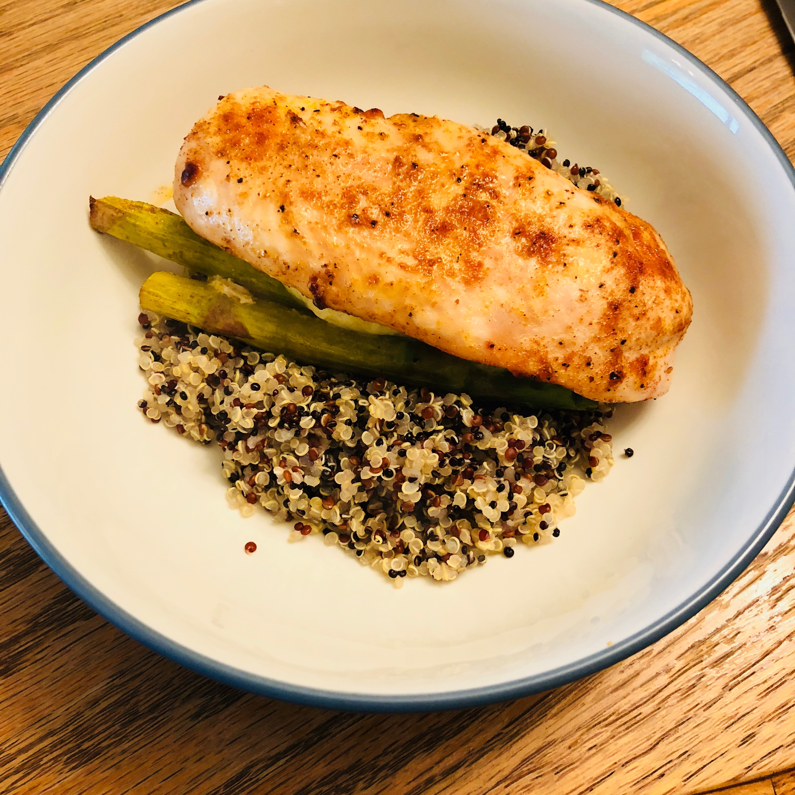

Mozzarella and Asparagus Stuffed Chicken

Ingredients
- 3 large chicken breasts
- 1 tbsp lemon zest
- Salt and pepper
- 9 to 12 asparagus stalks, trimmed
- Shredded mozzarella cheese
- 1 tsp garlic powder
- 1 tsp paprika
- 1 tbsp olive oil
Instructions
1 . Preheat oven to 425˚F.
2 . Cut chicken breasts in half, length-wise, creating a pocket to stuff with other ingredients. Season the inside of the chicken breast with salt and pepper and a pinch of lemon zest. Sprinkle the cheese and 3 to 4 stalks of asparagus in the center of each chicken breast and fold over, enclosing the filling.
3 . Season the outside of each chicken breast with salt, pepper, garlic powder and paprika.
4 . Heat a large pan over medium-high heat and add the 1 tbsp olive oil, swirling around to coat the bottom of the pan. Cook the chicken top side down, for 3 to 5 minutes, until the chicken easily releases from the pan and is golden brown on top. Flip the chicken over and cook an additional 3 to 5 minutes to sear the bottom side.
5 . Carefully place chicken breasts onto baking sheet. Bake for an additional 15 minutes or until the chicken is cooked through. Feel free to place extra asparagus around the chicken to bake as well.
6 . Remove from oven and serve over rice or quinoa.
Original Source: I Wash You Dry